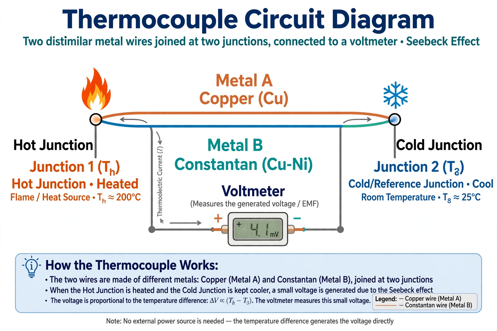

The Seebeck effect is the direct conversion of temperature differences into electric voltage, and vice versa, at the junction of dissimilar electrical conductors or semiconductors. When two junctions of a circuit made from two different materials are held at different temperatures, a voltage difference develops between them that is proportional to the temperature difference. The effect is named after the Baltic German physicist Thomas Johann Seebeck, who discovered it in 1821.
The Seebeck coefficient (thermopower) S = ΔV/ΔT measures the magnitude of the induced voltage per unit temperature difference, in microvolts per kelvin. The sign and size of the coefficient depend on the materials: charge carriers in a material diffuse from the hot end to the cold end, and the resulting charge separation is what produces the voltage. Metals have small coefficients (a few µV/K); doped semiconductors can reach hundreds of µV/K.
The Seebeck effect is one of three reversible thermoelectric phenomena. The Peltier effect (1834) is its converse: driving a current across a junction heats or cools it. The Thomson effect describes heating or cooling along a single conductor carrying current in a temperature gradient. The three are linked by the Kelvin relations.